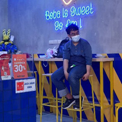
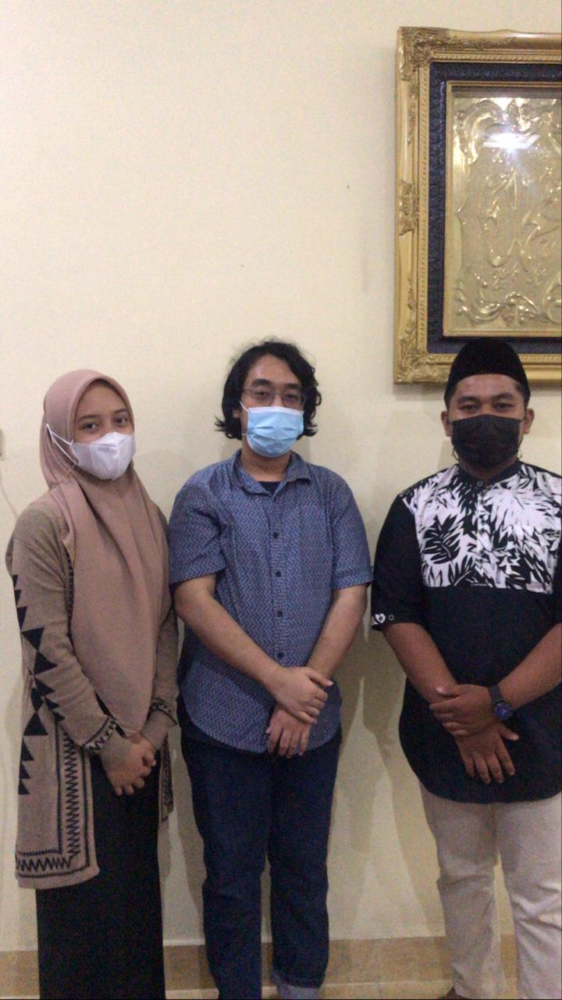
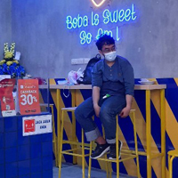
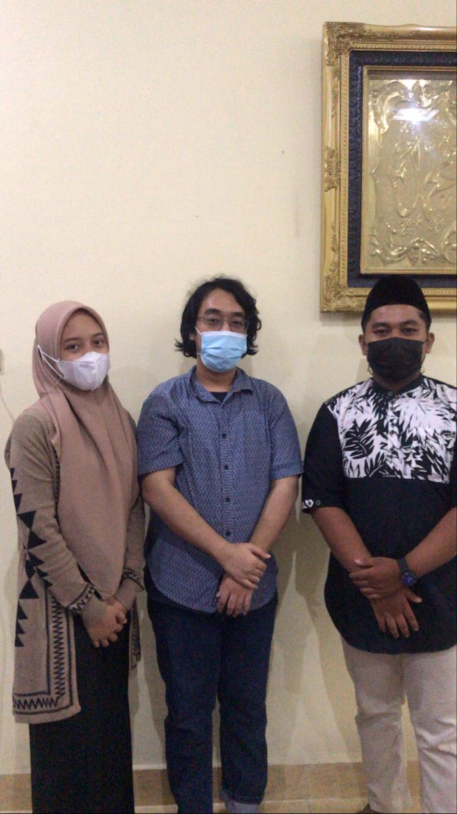
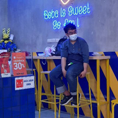
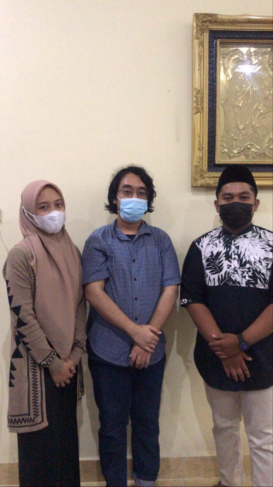
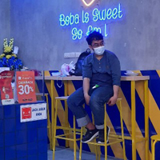
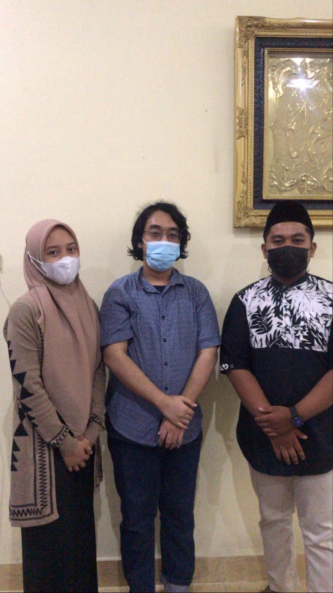

Nama saya Andi Muh Mappanganro, biasanya dipanggil Angga . Hobi membaca dan ngoding. Sekarang saya berkuliah di Universitas Negeri Makassar Jurusan Teknik Informatika prodi Pendidikan Teknik Informatika. Status sekarang Mahasiswa. Prinsip hidup saya adalah jangan pernah menyerah .